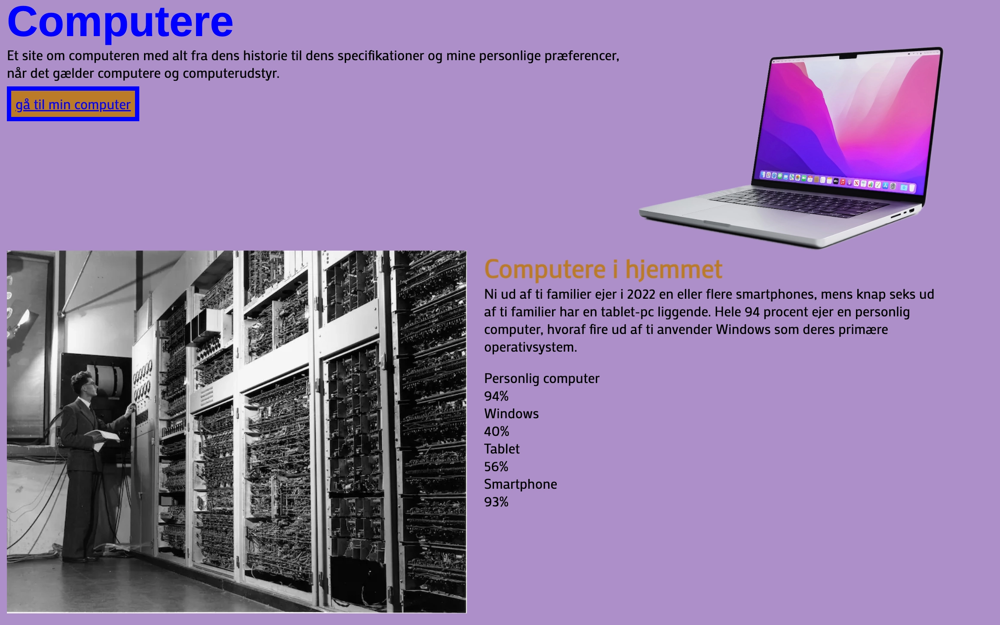

Grundlæggende web
Tema beskrivelse
“Grundlæggende web” var det 1. tema. Temaet var starten på vores uddannelse. Her var introduktion og opgaver indenfor:Lær at lave websider i html og i css, blandt andet hvordan man laver forskellige farver på siden og hvordan man sætter billeder ind og tilpasser dem til rigtig størelse.
se projekt
Min start på studiet
Da teamet lå som opstart på studiet fik vi små opgaver hvor vi skulle arbejde med at lave html sider. Jeg skulle skrive om et kæledyr og lave et visitkort. Jeg skrev om mig selv og havde et billede med. Opgaverne var med til at vise hvordan man på en enkel måde kunne implementere tekst og billede på htmlsider. Jeg har ikke før arbejdet med html, så jeg skulle lære et helt nyt område at kende. Næsten som at lære et nyt sprog, hvilket var lidt udfordrende. Vi sluttede af med at lave en studiestartsprøve, hvor vi fik udleveret billeder og et layoutdiagram , som hjælp til at sætte det indhold op jeg skulle kode. her brugte jeg Visual Studio Code..
Værktøjer jeg har brugt i forløbet
Se billeder af proces- brug musen